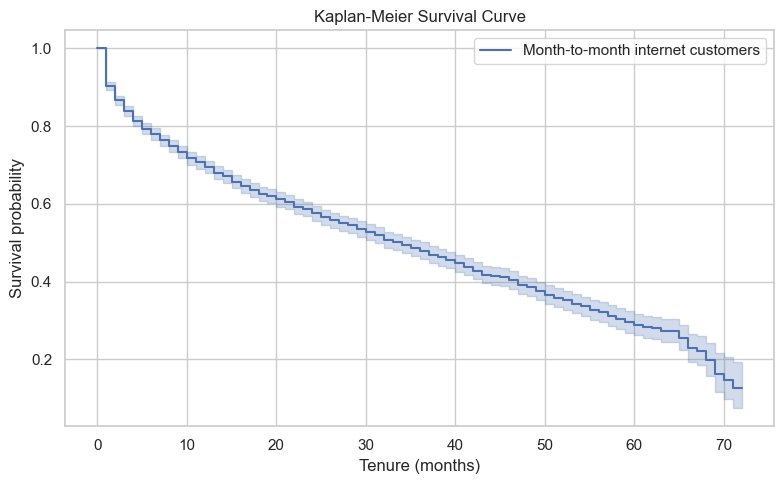
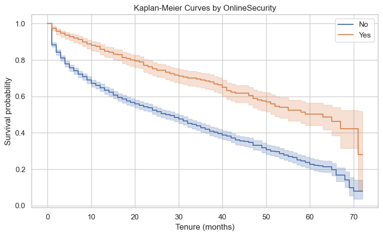
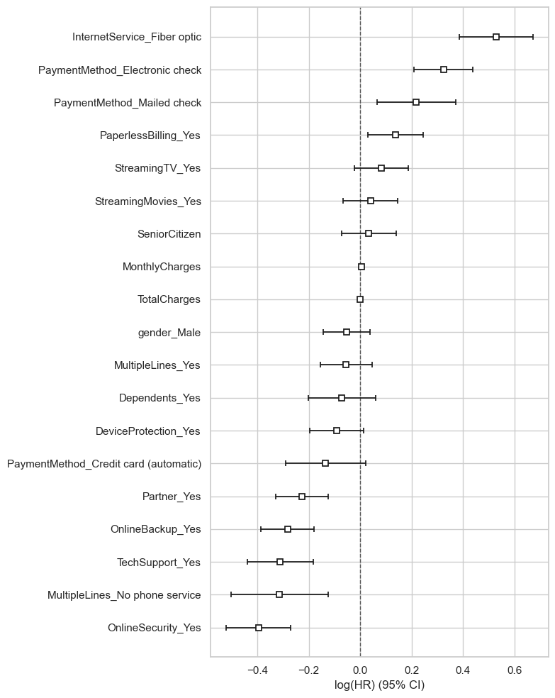
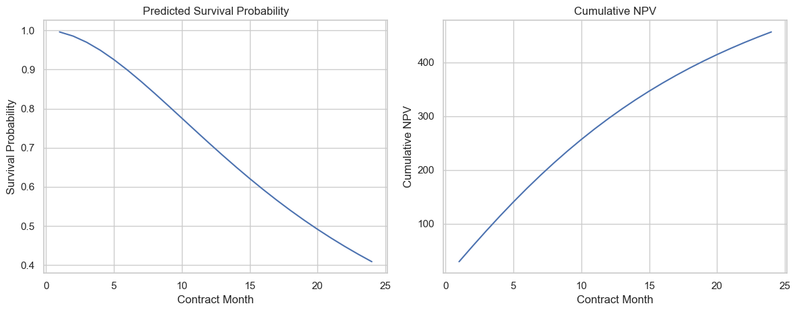

Survival Analysis for Churn and Lifetime Value
本文记录了我基于 Databricks survival-analysis 教程完成的生存分析案例。 研究目标是分析客户流失（customer churn）的时间分布、影响因素，以及客户留存对商业价值的影响。
1. Background
在传统的 churn prediction 中，问题通常被简化成一个二分类任务：客户是否会流失。 但这种方式忽略了一个很重要的问题：客户会在什么时候流失。 生存分析（survival analysis）正好适合解决这一类问题，因为它可以同时考虑事件是否发生以及事件发生的时间。
在本案例中，事件（event）定义为客户流失，生存时间（survival time）定义为客户在流失前持续存续的月份数。 对于在观测结束时仍未流失的客户，则视为删失样本（censored observations）。
2. Data Preparation
本案例使用 IBM Telco Customer Churn 数据集。按照原始教程的处理思路， 我首先用 Spark 读入原始 CSV 数据，再进行筛选与清洗。
主要预处理步骤
- 将
Churn转换为二元事件变量churn - 将
tenure作为持续时间变量 - 聚焦于
Month-to-month合同客户 - 去掉没有互联网服务的客户
- 将
TotalCharges转换为数值 - 对类别变量进行 one-hot encoding 以支持后续建模
3. Kaplan-Meier Survival Analysis
Kaplan-Meier estimator 用于估计客户在不同时间点仍然未流失的概率。 通过整体 survival curve，可以直观看到客户留存概率如何随时间下降。

从 Kaplan-Meier 曲线可以看出，随着 tenure 增加，客户仍然留存的概率持续下降。 这一结果说明 churn 并不是一个单纯的“会不会发生”的问题，而是具有明确时间结构的过程。
关键结果
- Median survival time 约为 34 个月
- 客户留存概率在前期下降较快，之后逐渐趋缓
4. Group Comparison and Log-rank Test
为了进一步比较不同客户群体之间的 churn 差异，我按照 OnlineSecurity 分组绘制了 Kaplan-Meier 曲线，
并使用 log-rank test 检验组间差异是否显著。

结果表明，不同 OnlineSecurity 组别之间的生存曲线差异非常显著。
这意味着是否拥有在线安全服务，与客户的 churn 时间分布存在明显关系。
5. Cox Proportional Hazards Model
Kaplan-Meier 更偏描述性分析，而 Cox proportional hazards model 则可以在多变量条件下， 定量分析哪些因素会提高或降低 churn hazard。

主要发现
InternetService_Fiber optic与更高的 churn hazard 相关PaymentMethod_Electronic check与更高的 churn hazard 相关OnlineSecurity_Yes、OnlineBackup_Yes、TechSupport_Yes与更低的 churn hazard 相关- 部分变量显示较强统计显著性，说明它们在控制其他变量后仍然重要
这些结果表明，附加服务的使用情况和支付方式都与 churn 风险存在明显联系。 某些服务可能提高了客户粘性，而某些支付方式或资费结构则可能伴随更高流失风险。
6. Proportional Hazards Assumption
Cox 模型依赖 proportional hazards assumption，即不同变量对 hazard 的相对影响在时间维度上保持稳定。 在本案例中，这一假设并不是对所有变量都完全成立。
这意味着 CoxPH 虽然很有解释力，但它并不一定是唯一合适的模型。因此，继续引入 Accelerated Failure Time（AFT）模型是合理的。
7. Accelerated Failure Time Model
AFT 模型直接建模“事件发生时间”，而不是瞬时风险函数，因此更适合从客户生命周期长度的角度进行解释。
在本案例中，我比较了三种 AFT 模型：
- Log-Logistic AFT
- Weibull AFT
- Log-Normal AFT
根据 AIC 比较结果，Weibull AFT 的表现最好。这说明在当前数据和特征处理下， Weibull 分布更适合描述 churn 的时间结构。
8. Customer Lifetime Value and NPV
Survival analysis 的一个重要优势是，它不仅能研究 churn，还可以进一步与商业价值结合。 在本案例中，我根据 survival probability 估计了未来每个月的 expected monthly profit， 再进一步计算 NPV（Net Present Value）和 cumulative NPV。

结果表明，客户存续概率随着时间下降，而累计净现值则随着时间逐步增长。 这说明 retention 不只是统计问题，也直接关系到客户的长期商业价值。
9. Conclusion
本案例展示了 survival analysis 在 churn 问题中的完整应用流程：
- 使用 Spark 做数据准备
- 使用 Kaplan-Meier 描述总体留存趋势
- 使用 log-rank test 检验不同群体的生存差异
- 使用 CoxPH 模型识别重要风险因素
- 使用 AFT 模型补充对时间尺度的解释
- 将 survival model 结果延伸到 CLV / NPV 的商业分析
10. References
- Databricks Industry Solutions. survival-analysis. GitHub Repository
- Databricks Notebook. Survival Analysis for Churn and Lifetime Value. Online Notebook
- IBM. Telco Customer Churn Dataset. Dataset Link